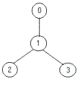

Bob enjoys playing computer games, especially strategic games, but sometimes he cannot find the solution fast enough and then he is very sad. Now he has the following problem. He must defend a medieval city, the roads of which form a tree. He has to put the minimum number of soldiers on the nodes so that they can observe all the edges. Can you help him?
Your program should find the minimum number of soldiers that Bob has to put for a given tree.
For example for the tree:

the solution is one soldier (at the node 1).
The node identifiers are integer numbers between 0 and n-1, for n nodes (0 < n="" ≤="">). Every edge appears only once in the input data.the number of nodes the description of each node in the following format:
node_identifier:(number_of_roads) node_identifier1 node_identifier2 … node_identifiernumber_of_roads
or
node_identifier:(0)
4 0:(1) 1 1:(2) 2 3 2:(0) 3:(0) 5 3:(3) 1 4 2 1:(1) 0 2:(0) 0:(0) 4:(0)
1 2